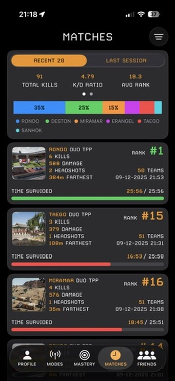
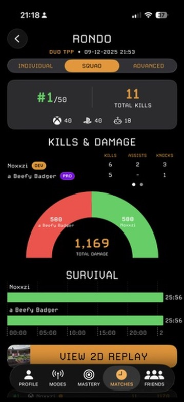
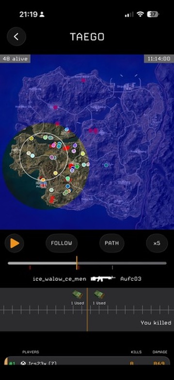
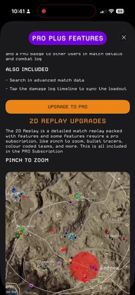

The #1 Stats Tracker for PUBG PC & Console. Dive deep into your performance with detailed stats, immersive 2D replays, combat logs, mastery insights, match histories and more.
Download on the App Store
Access detailed statistics for every match and season: wins, K/D ratio, damage, time survived, map breakdowns and more.

Visualise your kills, damage and survival over time with clear charts and damage logs. Compare yourself to squad mates and rivals.

Replay every game in a tactical 2D map. See your path, kills, loot drops and discover where you can improve your strategy.

Unlock advanced match search, live loot timeline sync, pinch‑to‑zoom replays, colour‑coded teams and a Pro badge with our optional subscription.
Whether you’re an Esports competitor, a ranked grinder or a casual duo, Stats Tracker gives you the insights you need to climb the leaderboard. Track your progress, understand your strengths and weaknesses, and share your achievements with friends.
Get Started Now